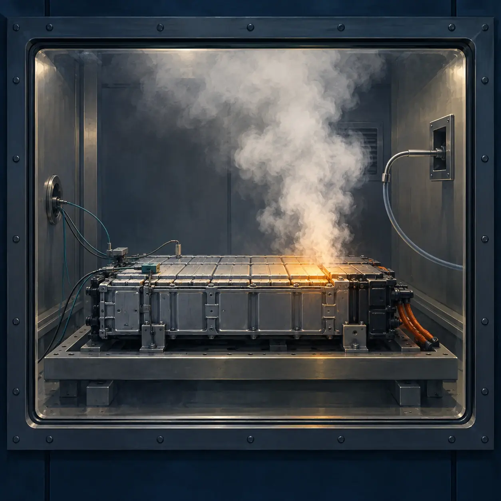
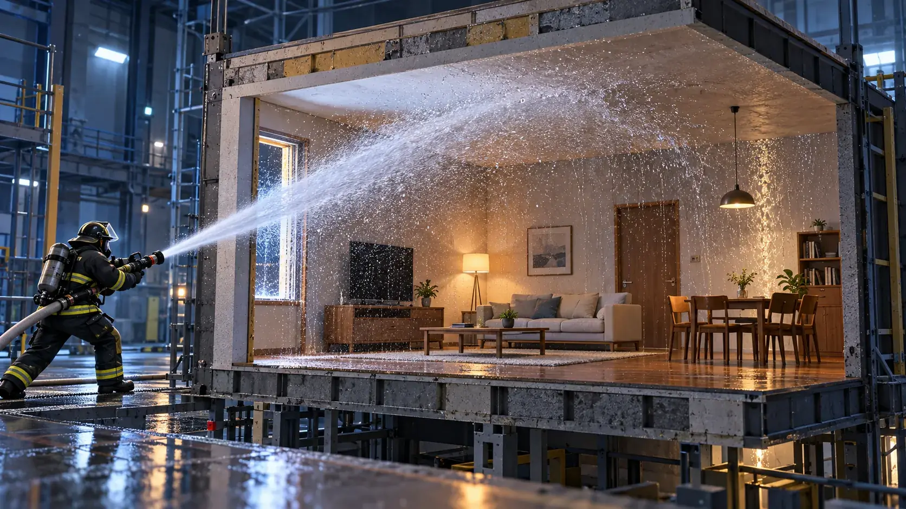

CATEGORY / 119SCIENCE
119SCIENCE
科学・研究・論文
掲載記事：2件

リチウムイオン電池火災は、炎だけでは語れない
ガス・粉塵・温度変化から熱暴走を読み解く。産総研と東京消防庁の公開資料をもとに、実験で分かったことと適用範囲を整理する。

放水戦術を科学する
火災性状と注水方法が消火効果に及ぼす影響を考える。
連載は連載一覧からもご覧いただけます。
CATEGORY / 119SCIENCE
科学・研究・論文
掲載記事：2件

ガス・粉塵・温度変化から熱暴走を読み解く。産総研と東京消防庁の公開資料をもとに、実験で分かったことと適用範囲を整理する。

火災性状と注水方法が消火効果に及ぼす影響を考える。
連載は連載一覧からもご覧いただけます。